11.19 住福冈（博多附近）
（晚上七点多或者快九点到达的班次）
应该住博多离机场近
交通与票务
- 票：福冈广域2日券（网上购买JR九州铁路周游券福冈广域版（2日券，3060日元）电子票，到达车站后无需兑换成纸质票，两日内有效，并不是48小时，进出站出示即可，用周游券可乘坐JR特急，但只能自由席）
11.20 住福冈附近
11.21 住鹿儿岛
11.22 住宫崎市
宫崎日南线 → 住宫崎市
交通
早上鹿儿岛去仙岩院/城山展望台
鹿儿岛 → 宫崎2h（早7晚8都有车，看想逛鹿儿岛还是宫崎）
行程安排
宫崎是走日南线（青岛神社、日南海岸）（先去玩儿或者先到宫崎放东西再出来）
不日南可以从鹿儿岛去雾岛、高千穗牧场一日游然后回鹿儿岛晚上到宫崎
11.24 住熊本
11.27 住长崎
11.28 返程
长崎→ 中午离境
起得早就逛逛，睡觉就睡起来走人
九州补充信息
二、全州地图（含大交通时间）
| 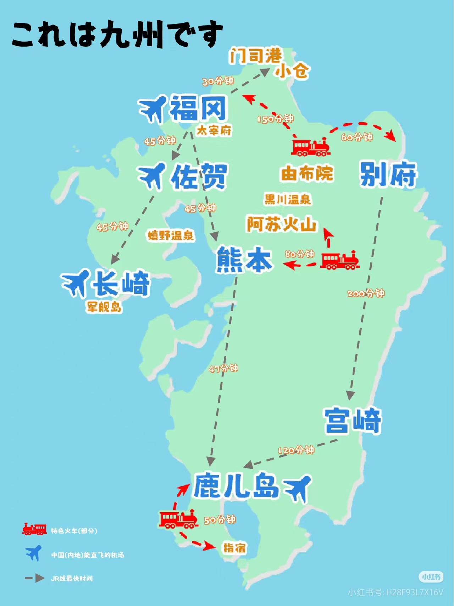 | 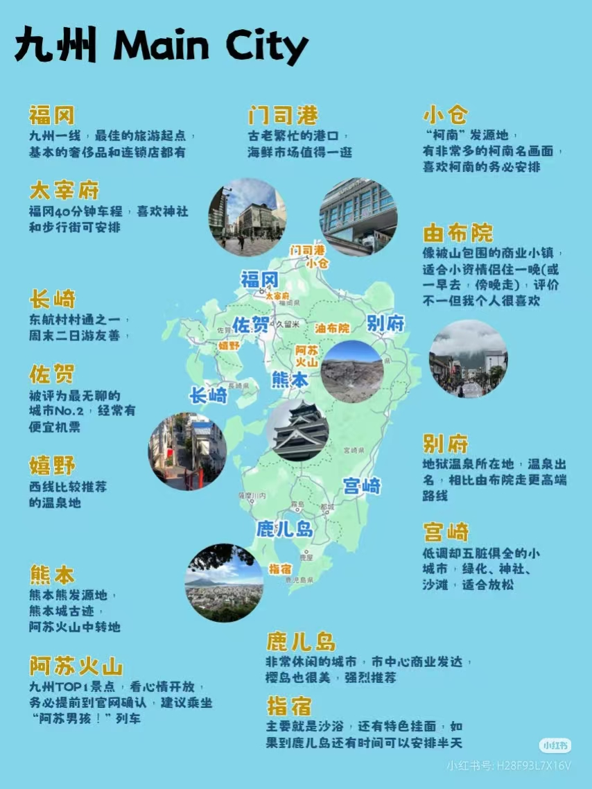 |
| 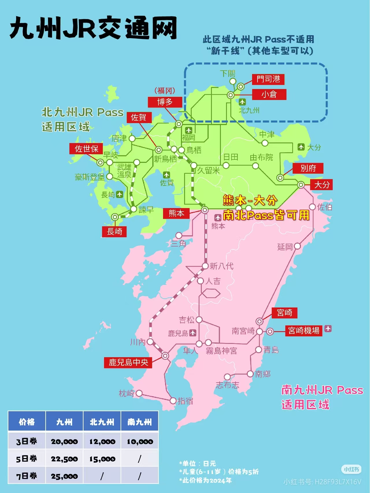 |  |
| 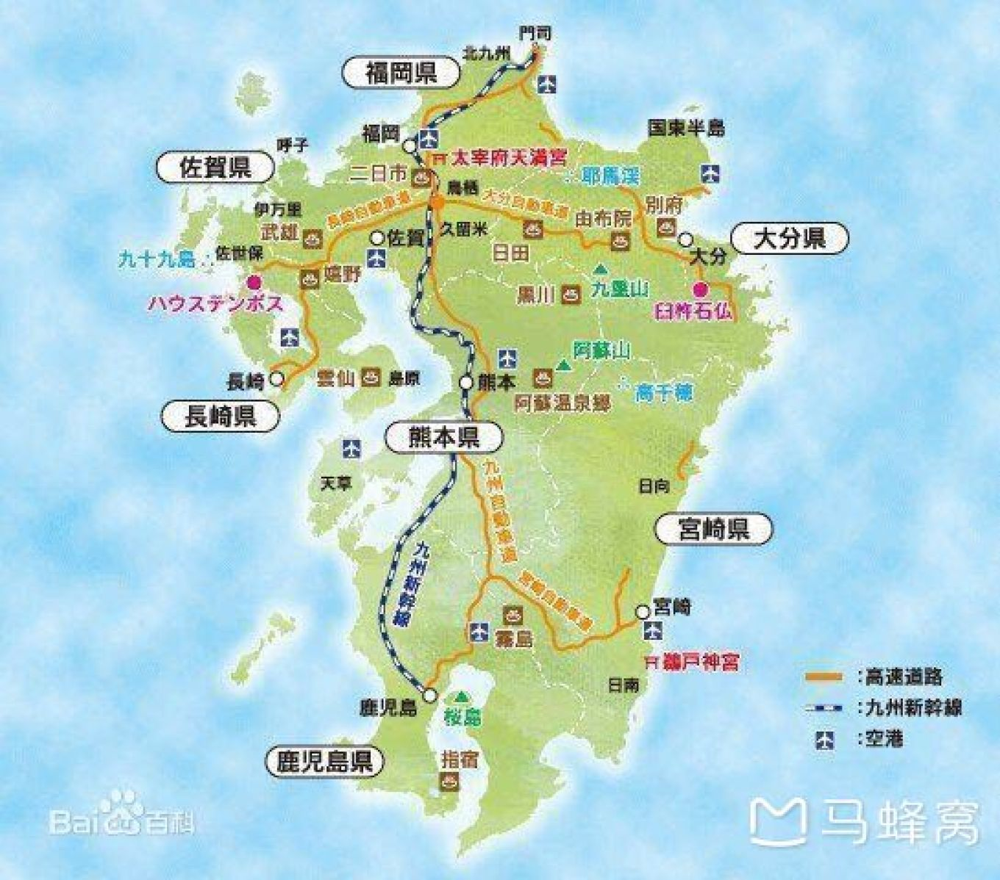 | 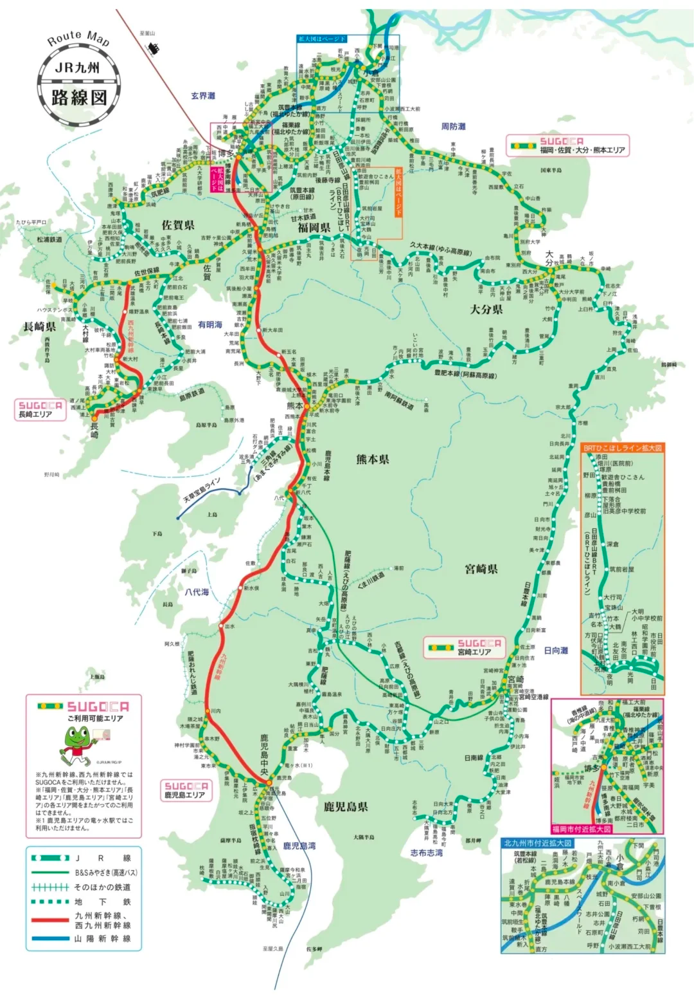 |
| 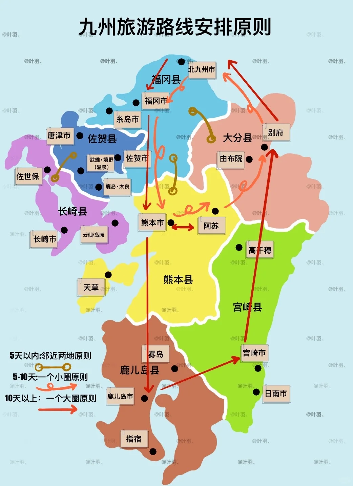 | 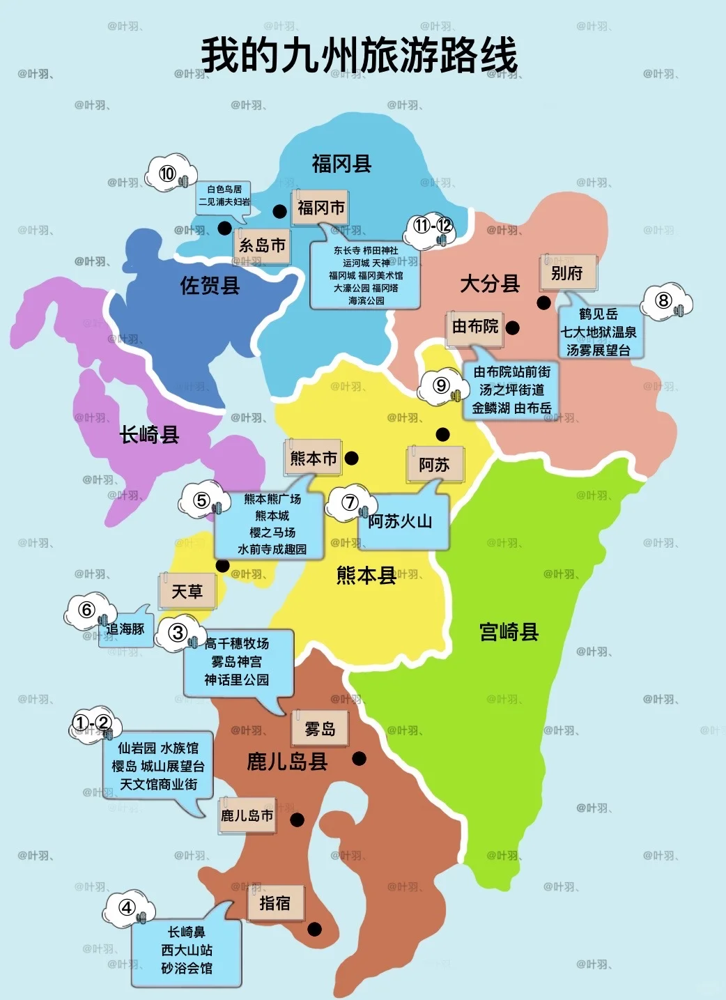 |
（部分路线时间：
- 久留米➡️福冈近13分钟
- 久留米➡️熊本近25分钟
- 久留米➡️由布院近90分钟
- 久留米➡️别府近150分钟）
ps：不是西铁久留米，两站通勤不便
枫叶时间
| 枫叶1 | 枫叶2 |
|---|---|
| 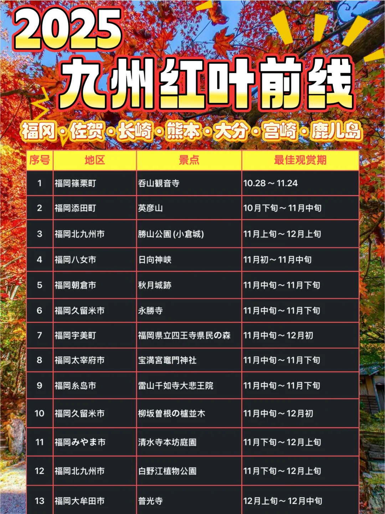 | 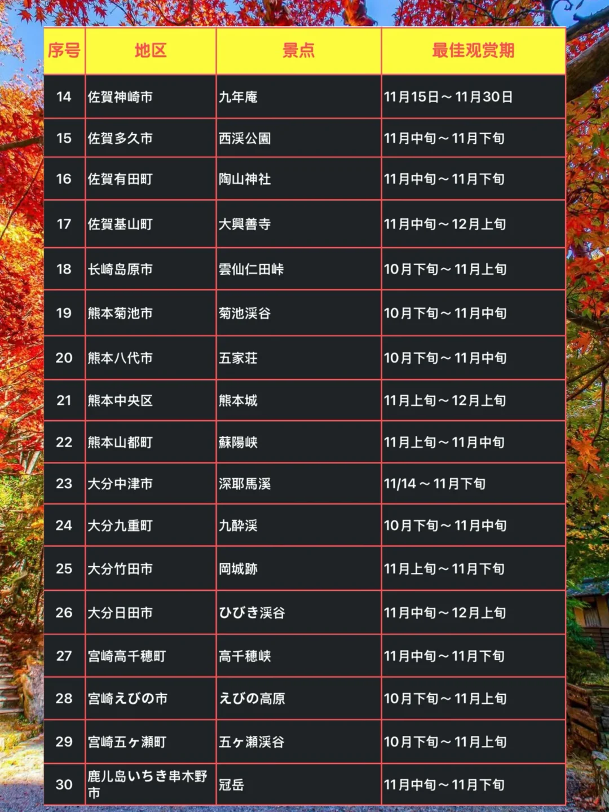 |
实用攻略参考汇总
- 1. 阿苏、别府各一日游：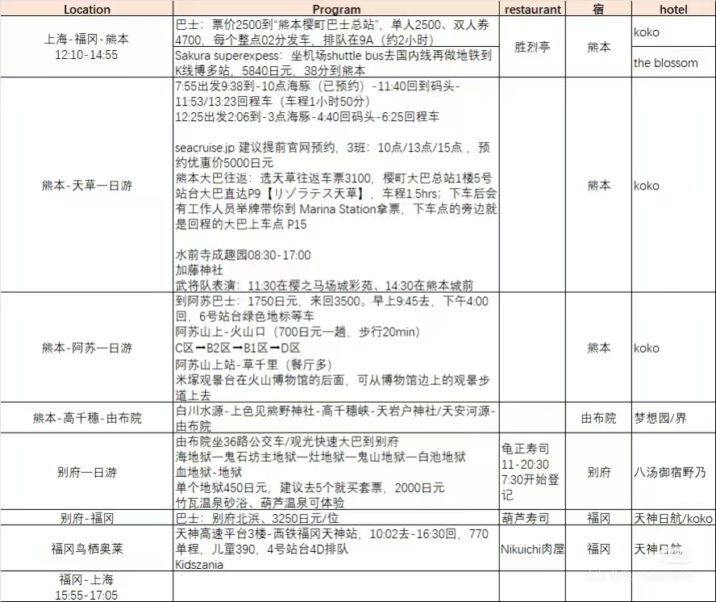
- 2. 北九推荐1：佐贺、门司港、嬉野、长崎（长崎推荐：谏早 岛原 五岛列岛）
- 3. 北九推荐2：由布院(二天)一别府(二天)→小仓、门司港、下关(二天)→福冈(二天)
- 4. xhs10日全九攻略：小红书链接
- 5. 小仓门司港由布院熊本佐贺：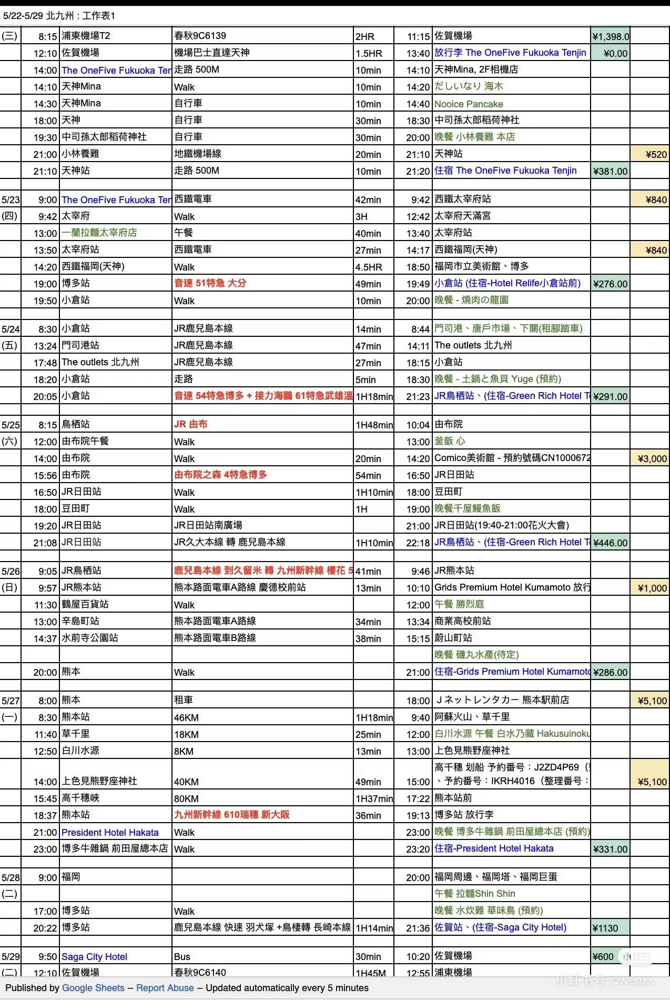
- 6. xhs推荐：日南线也很好，青岛，鹈户神宫，高千穗瀑布。雾岛神宫，指宿也不错。还有种子岛，屋久岛。
- 7. 马蜂窝11日攻略：马蜂窝链接
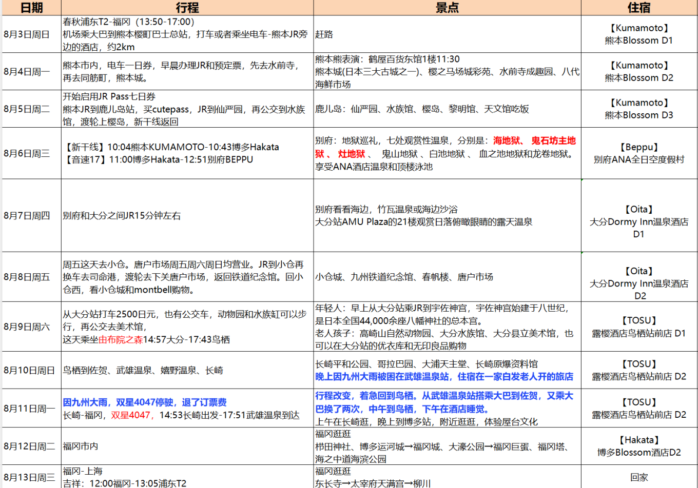 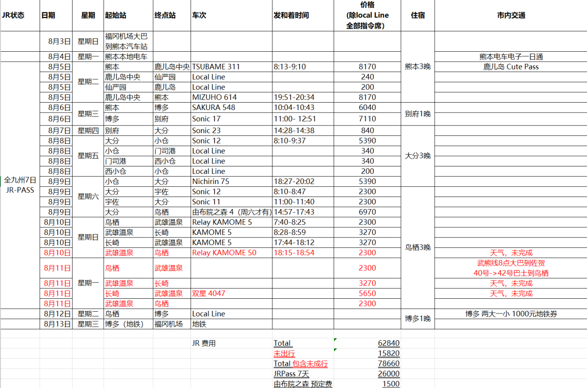
- 8.

- 9. 马蜂窝北九10日攻略（游记比较详细有部分巴士时刻表）：马蜂窝链接 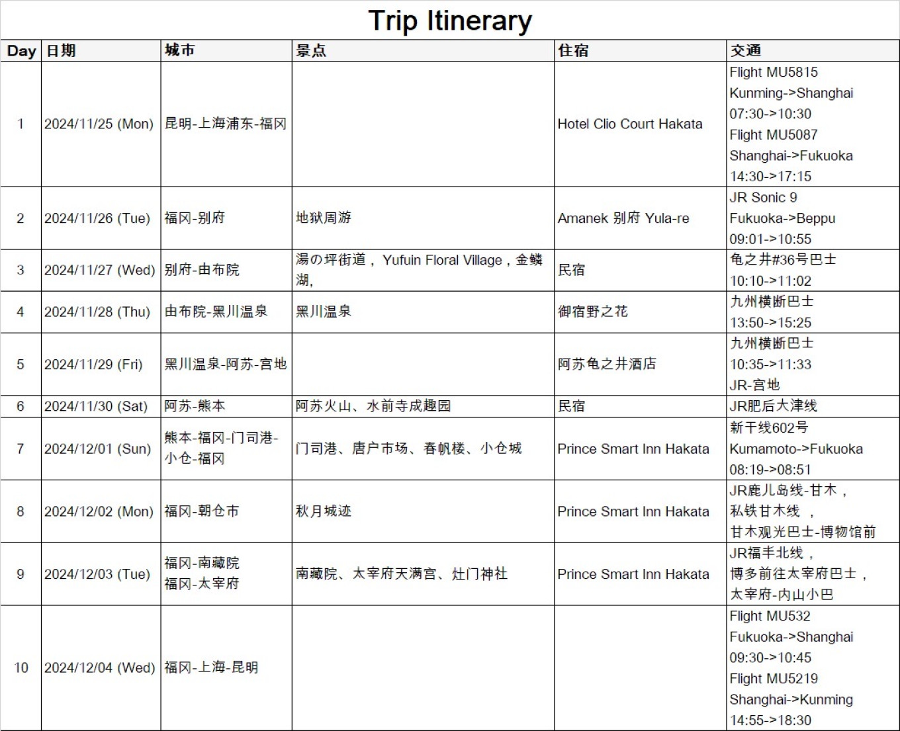
- 10. jr九州地图路线及近期timetable：小红书链接
- 11. 福冈、熊本、长崎、北九州市内交通：小红书链接
- 12. 带VISA卡去日本711大优惠：小红书链接
可跳转友情链接
- 日本旅游官网：https://www.japan-travel.cn/destinations/kyushu/
- 九州旅游官网：https://www.welcomekyushu.travel/cn/#
- JR九州铁道xhs：小红书链接
9天8晚
11月21日 - 11月29日
4个城市
函馆、登别、札幌、旭川
JR交通
利用JR Pass畅游
景点巡礼
函馆山夜景、小樽运河等
11.21 住函馆
上午
jsj：0830-1300 到新千岁机场
下午
新千岁-函馆 1350-1713
新千岁-函馆
特急北斗南千岁函馆
11.22 住函馆
行程安排
- 第一天步行金森仓库，八幡坂，函馆山夜景
- 第二天上午去五棱郭公园，下午去大沼公园P17，可以从JR函馆站坐JR20分钟达到
时刻表
看小红书去年11.18是秋末冬初的景色（下图1、2），感觉可以落地直接函馆赌一下红叶（五棱郭公园），概率也很小就是了
主要景点

五棱郭公园
大沼国定公园
修道院
还有函馆山、红砖仓库等等的
柯南巡礼路线
-
📍JR函馆站（P2）
🗺️所有行程的开始，札幌->函馆JR特级北斗号的终点站。
-
📍普乐美雅凯酒店（P3-P4）
🗺️在JR函馆站隔壁，步行160米，是柯南动漫里的，酒店很不错。有人问这家与函馆JR旅馆之间怎么选，两家酒店都很好，早餐也非常好，普乐美在顶楼有静吧，暁调的很好P13；JR旅馆有温泉，晚上泡汤很合适。
-
📍五稜郭公园（P5-P8）
🗺️从函馆JR站公交站台出发，坐5A和5B，时刻表P18，一站就到。五稜郭塔可以拍到星状的公园，最美是樱花盛开的时候，之前的一篇上传过。P15可以看四季的五稜郭。
-
📍金森仓库&小丑汉堡（P9-P10）
🗺️从酒店导航步行1.5公里左右就可以到达，红砖仓库对面就有函馆限定小丑汉堡。
-
📍八幡坂（P11）
🗺️连接函馆红砖仓库和函馆山的一条上坡路，P14是四季的八幡坂。
-
📍函馆山百万夜景（P1）
🗺️走到八幡坂最上面，延东南方向小路一直走，路过很多教会后抵达函馆山缆车，乘缆车上山看夜景。注意：缆车今年10月9日至11月9日停运，只能乘坐巴士和出租车上山。11月9日之后登山道关闭，只能缆车上山。
11.23 住登别
交通
函馆-登别 1501-1734

11.24 住登别
登别一日游
景点罗列
具体行程和交通参考
11.25 住札幌
交通
登别-札幌 1705-1823
札幌函馆时刻表

登别札幌
晚班
11.26 住札幌
小樽一日游 - 交通

小樽时刻表
早班
晚班
- 去程：札幌站➠南小樽站（JR函馆本线，约30分钟，JR Pass可用）
- 返程：小樽站➠札幌站（JR函馆本线，约35分钟，班次密集，无需提前预约）
- 车程贴士：建议早上去程选08:00前班次（避开旅行团，拍照人少），返程选16:00后（悠闲游玩不赶时间）
小樽一日游 - 行程安排
- 09:00-10:30 南小樽站→小樽运河：步行15分钟，沿途经过复古仓库群，清晨光线适合拍氛围感照片
- 10:30-12:00 小樽运河+运河仓库街：世界遗产级夜景地标，冬季有灯光装饰，可乘坐运河游船（30分钟/人，1500日元）
- 12:00-13:30 午餐时间：运河附近「小樽海鲜食堂」，推荐海鲜丼、烤扇贝、味增汤
- 13:30-15:00 小樽音乐盒堂+硝子馆：音乐盒堂（收藏3000+件古董音乐盒，可自制专属音乐盒）、北一硝子馆（手工玻璃制品，拍照出片）
- 15:00-16:00 小樽童话十字路口+白色恋人巧克力工坊（小樽店）：复古街道打卡，购买限定巧克力伴手礼

小樽运河清晨（人少景美）

小樽音乐盒堂（复古欧式建筑）
小樽美食推荐
海鲜丼
新鲜北海道海鲜，盖饭量大料足
LeTAO芝士蛋糕
双层芝士口感绵密，限定口味必尝
烤鱿鱼干
运河边现烤，咸香有嚼劲
11.27 住旭川
交通：札幌→旭川
札幌站→旭川站（JR特急「超级神威号」，约1小时40分钟，JR Pass可用）
📅 推荐班次：08:00出发→09:40抵达（预留充足时间游玩旭川动物园）

JR特急超级神威号（舒适宽敞）

旭川站（北海道北部交通枢纽）
下午行程：旭川动物园
- 旭川站→旭川动物园（巴士20分钟，票价310日元，IC卡可用；或出租车约15分钟，2500日元）
- 动物园开放时间：9:00-16:30（11月可能提前至16:00闭园，建议出发前官网确认）
- 核心看点：北极熊（室内观赏通道+户外雪地活动）、企鹅（11月底可能开启冬季「企鹅散步」预热）、雪豹、海豹、猫头鹰
- 游玩时间：3-4小时（建议10点前入园，避开人流，动物活跃度更高）
- 门票：成人800日元，学生400日元，可现场购票或提前在Lawson预约

企鹅展区（冬季散步活动超人气）

北极熊展区（雪地嬉戏超可爱）
晚餐推荐
旭川站附近「旭川拉面村」，集中了多家知名拉面店，推荐：
- 梅光轩（旭川酱油拉面代表，汤头浓郁，面条偏粗）
- 青叶（味噌拉面，辣味可选，配料丰富）
- 竹末（盐味拉面，清爽不腻，适合喜欢清淡口味）
🍜 特色：旭川拉面是北海道三大拉面之一，以「粗面+浓郁汤头」为标志，搭配叉烧、溏心蛋、豆芽

旭川酱油拉面（经典口味）
11.28 住札幌
交通：旭川→美瑛→札幌
- 旭川站→美瑛站（JR普通列车，约20分钟，JR Pass可用，每小时2-3班）
- 推荐班次：08:30出发→08:55抵达（美瑛上午光线柔和，适合拍照，11月底可能有初雪覆盖，田园雪景绝美）
- 美瑛站→札幌站（JR特急「超级北斗号」，约1小时30分钟，16:00后班次充足，推荐16:30出发→18:00抵达）

JR旭川线（沿途田园雪景风光）
美瑛一日游（冬季雪景+田园风光）
美瑛游玩方式（冬季推荐）：
- 包车游（推荐4-5人同行，约15000-18000日元/天，司机兼向导，可灵活停靠景点，避免雪地步行受凉）
- 雪地自行车（美瑛站可租，约2000日元/3小时，适合体力较好、不怕冷的游客，路线有专用雪地车道）
- 巴士游（美瑛町循环巴士，约500日元/天，站点覆盖主要景点，但班次较少，需按时刻表出行）
核心景点（超广角之路+拼布之路）：
- 圣诞树（超广角之路标志性景点，孤树矗立在雪地中，拍照氛围感拉满）
- 七星之树（因曾作为七星香烟广告背景而闻名，冬季雪景搭配天空更出片）
- 亲子树（两棵相依的树木，象征亲子情深，雪地中格外温馨）
- 拼布之路（农田与森林交织，初雪覆盖后像一块白色拼布，适合远观拍照）
- 美瑛町立美术馆（小众景点，展示当地艺术家作品，免费参观，可躲避寒风休息）

超广角之路·圣诞树（冬季雪景）

拼布之路（初雪覆盖田园）
午餐推荐
美瑛站附近「美瑛乡村料理 北野」，推荐菜品：
- 烤羊肉定食（美瑛当地养殖羊肉，肉质鲜嫩无膻味）
- 蔬菜天妇罗（食材来自美瑛农田，新鲜清甜）
- 味噌汤（搭配当地豆腐和野菜，暖身驱寒）
🥬 特色：所有食材均来自美瑛当地，无添加，保留原汁原味，分量足，适合冬季补充能量

美瑛烤羊肉定食
冬季美瑛注意事项
- 气温较低（11月底约-5~0℃，风力较大），需穿戴防风羽绒服、雪地靴、厚手套、围巾帽子，建议贴暖宝宝
- 雪地路面较滑，无论是步行还是骑行，都需放慢速度，避免滑倒
- 部分景点可能因积雪封闭，出发前可咨询美瑛站旅游信息中心（有中文服务）
- 手机注意保暖，低温可能导致电量快速消耗，建议携带充电宝
11.29 札幌返程
返程交通
- 札幌站→新千岁机场（JR快速机场线，约45分钟，票价1070日元，JR Pass可用，每15分钟一班）
- ⚠️ 关键提示：国际航班建议提前3小时抵达机场（办理值机、退税、安检），国内航班提前2小时
- 推荐出发时间：
- 国际航班（如13:00后起飞）：09:00前从札幌站出发
- 国内航班（如14:00后起飞）：10:00前从札幌站出发
- 机场交通备选：高速巴士（札幌站→新千岁机场，约50分钟，票价1000日元，站点多，适合住札幌市区非车站附近的游客）

JR机场线列车（直达机场航站楼）

新千岁机场国际线航站楼